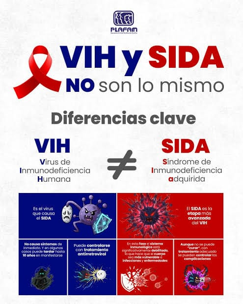
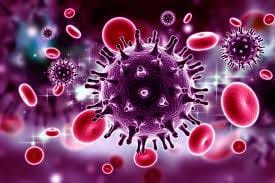

Infórmate, Previene y Actúa
Bienvenido a VIHDA. Una campaña educativa orientada a derribar mitos, promover la salud sexual responsable y frenar el estigma en el Perú y Cusco.
Cada 1 de diciembre se conmemora el Día Mundial del SIDA.
Integrantes
- Haylli Flor Huamani Huillcahuaman
- Maythe Aranguri Careceda
- Ruth Anely Quispe Pacco
- Diana Ayala Fuentes
- Curso:
- Cuidados Básicos de Enfermería
- Docente:
- Luz Marina Villacorta Valderrama
- Salón:
- 2A

¿Qué es el VIH y el SIDA?
Es fundamental aprender la diferencia clave para entender la salud pública.
VIH y SIDA NO son lo mismo
VIH significa Virus de la Inmunodeficiencia Humana. Ataca las células de defensa del organismo. Una persona puede ser portadora y no tener síntomas durante mucho tiempo.[4]
SIDA significa Síndrome de Inmunodeficiencia Adquirida. Es la etapa avanzada de la infección: las defensas están muy debilitadas y aparecen infecciones oportunistas.[4]
Importante: VIH y SIDA no son lo mismo. El VIH no se cura: se previene y se controla con tratamiento antirretroviral. Con diagnóstico oportuno es posible evitar llegar a la etapa SIDA.[2][4]

El VIH en Nuestro Contexto
Información clave sobre la situación actual.
Aprende en pocos minutos
Video explicativo sobre la transmisión, los síntomas y los mitos del virus.
¿Cómo se transmite el VIH realmente?
El virus solo puede transmitirse a través de tres vías específicas:
1. Vía sexual: relaciones sexuales (vaginales, anales u orales) sin el uso correcto del preservativo. La educación integral, la fidelidad mutua con resultado negativo en ambas personas y el uso correcto del preservativo reducen drásticamente el riesgo.[4]
2. Vía sanguínea: por compartir agujas o jeringas, o por contacto directo con sangre contaminada. No compartas jeringas y exige siempre material estéril en procedimientos médicos, tatuajes y piercings.[2][4]
3. Vía materno-infantil: de una madre que vive con el virus a su bebé, principalmente durante el parto (sobre todo por vía natural/vaginal, por contacto con sangre y secreciones) y durante la lactancia. Cómo se evita el contagio al bebé: con parto por cesárea cuando el equipo de salud lo indique y sin lactancia materna (se usa fórmula). Además, la madre debe tomar su tratamiento antirretroviral: este no la cura, solo controla el virus y reduce la cantidad de virus en su sangre, lo que disminuye el riesgo para el bebé.[2][4]

¿Cómo actúa el virus en el organismo?
El virus entra en las células de defensa del cuerpo (los glóbulos blancos) para multiplicarse. Sin control médico, debilita progresivamente el sistema inmunitario. Los medicamentos antirretrovirales bloquean esa multiplicación: el virus ya no destruye más células de defensa y las defensas se fortalecen.[4]